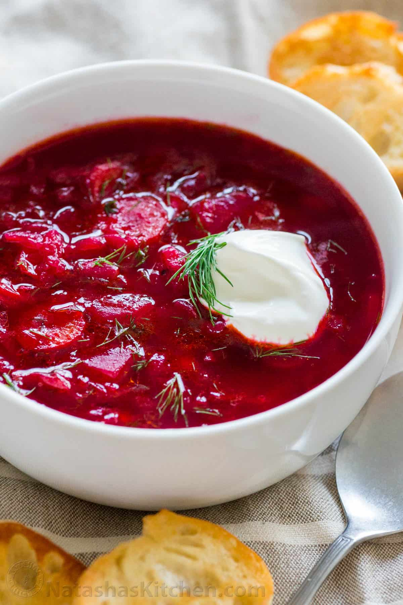
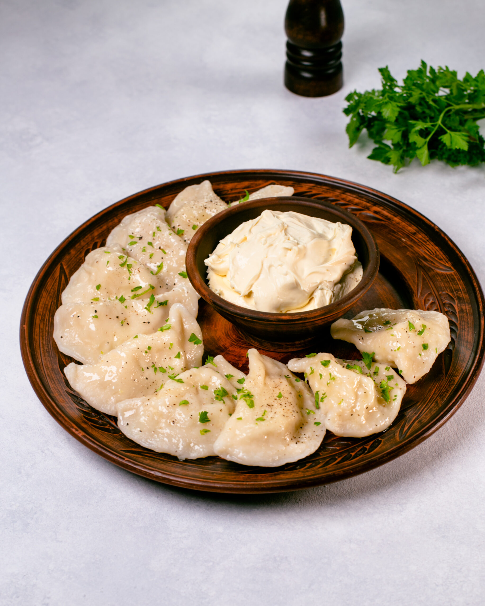
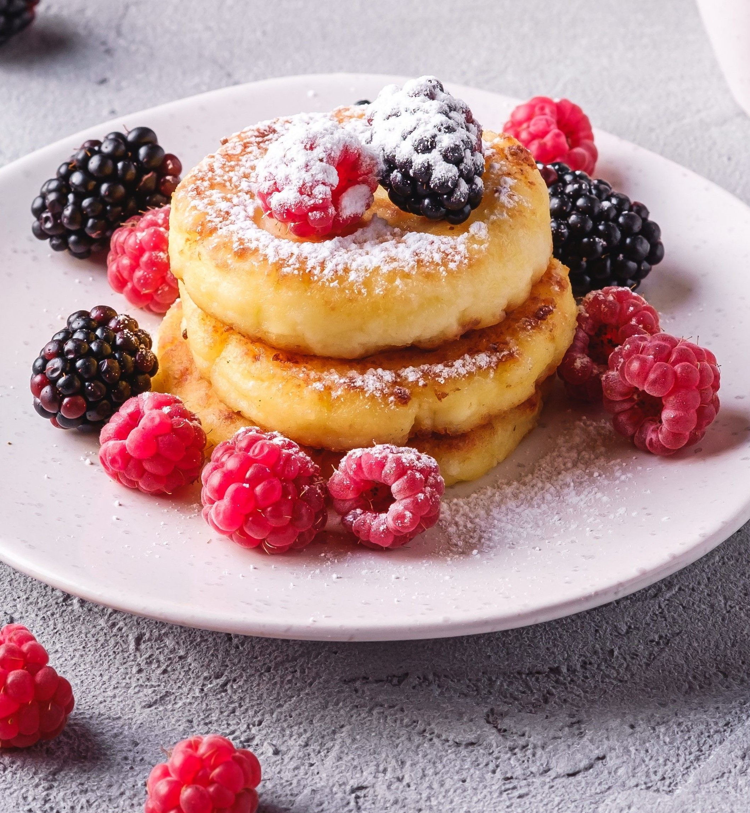

Борщ зі сметаною
Класичний борщ на яловичому бульйоні з буряком, квасолею та домашньою сметаною. Подаємо з часниковим пампушком.
95 ₴Домашня кухня · Свіжа випічка щодня
Готуємо повільно, з продуктів із сусіднього ринку, і подаємо з теплом — як удома, тільки з кавою на смак.
Переглянути менюМи відкрилися як маленька родинна кав'ярня і виросли в місце, куди приходять не лише поснідати, а й видихнути. У нас немає поспіху — є борщ, що варився шість годин, хліб, спечений сьогодні вранці, і столики біля вікна для тих, хто любить дивитися на дощ.

Класичний борщ на яловичому бульйоні з буряком, квасолею та домашньою сметаною. Подаємо з часниковим пампушком.
95 ₴
Ліплені вручну вареники з картопляно-сирною начинкою, смажена цибуля та грибний соус на вибір.
110 ₴
Нежний домашній сирник на сковороді, подається теплим, із сезонним ягідним соусом та сметаною.
80 ₴